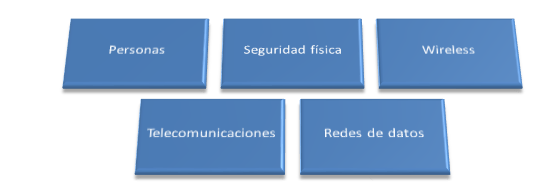
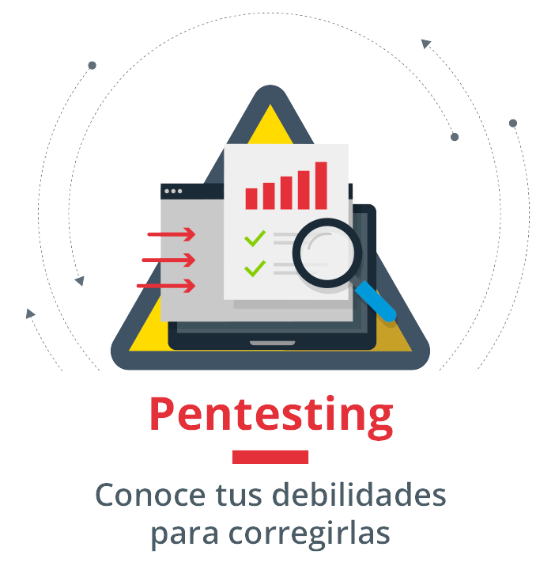
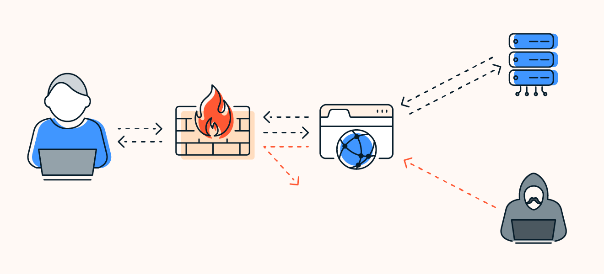
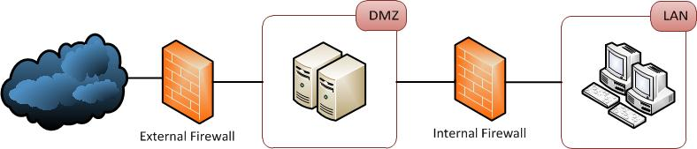
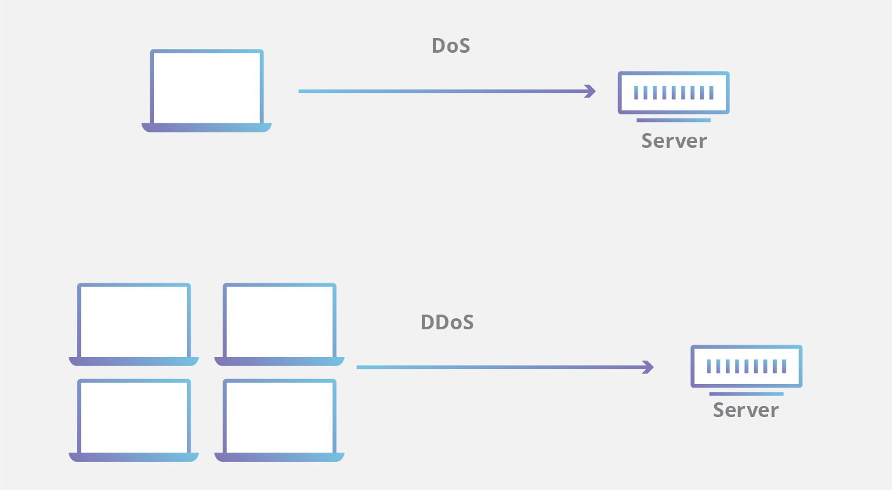
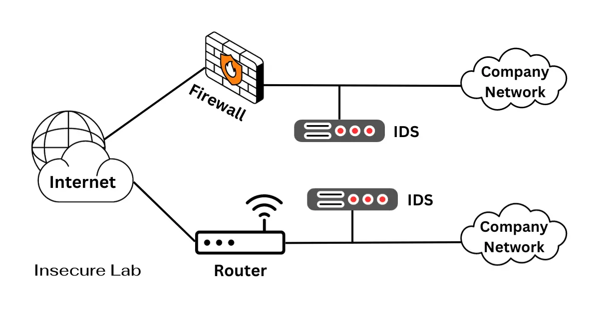
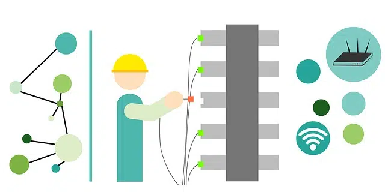
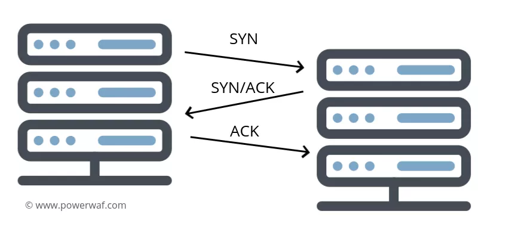

Metasploit

Metasploit es uno de los frameworks más populares y completos utilizados para probar la seguridad de los sistemas informáticos, especialmente dentro del sistema operativo Kali Linux.
Metasploit es uno de los frameworks más populares y completos utilizados para probar la seguridad de los sistemas informáticos, especialmente dentro del sistema operativo Kali Linux. Es un software de código abierto desarrollado inicialmente por H.D. Moore en 2003, su objetivo principal es permitir a los profesionales de seguridad desarrollar y ejecutar exploits contra una máquina remota. Específicamente, es utilizado para encontrar y explotar vulnerabilidades en sistemas y aplicaciones de software.
Un exploit es un programa o código que al ejecutarse se aprovecha de una vulnerabilidad en un sistema, programa o protocolo, para que el creador de dicho programa lo utilice en su beneficio, por ejemplo, para crear una puerta trasera, concebir un equipo zombie (bot), escalar privilegios, instalar un rootkit, robar información u otras actividades maliciosas.

Metasploit se puede utilizar para pruebas de penetración, auditorías de seguridad, investigaciones forenses, y para desarrollar habilidades de seguridad en general; esto debido a que contiene una colección de 900 exploits distintos. Este framework está disponible tanto en una versión gratuita como en una de pago, y puede utilizarse por sí solo o como parte de sistemas más amplios de pruebas de seguridad.
Sus principales características son:
- ★ Modularidad. Metasploit se compone de módulos que incluyen exploits, payloads, encoders, y nops. Cada módulo es una pieza específica que puede ser utilizada y combinada con otros módulos dentro del framework. Esto permite a los usuarios adaptar sus ataques a situaciones específicas.
- ★ Amplia Base de Datos. Posee una extensa base de datos de exploits ya disponibles, que cubren una amplia gama de software y vulnerabilidades conocidas.
- ★ Payloads. Un payload es lo que permite al atacante obtener control o extraer información del sistema afectado tras la explotación exitosa de una vulnerabilidad. Los payloads pueden ser simples como un shell o complejos como meterpreter, un payload avanzado que extiende la interfaz de control sobre el sistema objetivo.
- ★ Interfaz Gráfica y Consola. Metasploit puede ser operado a través de una interfaz gráfica de usuario (GUI) llamada Armitage, o mediante una consola de línea de comandos que proporciona control total al usuario.
- ★ Integración con otros sistemas. Se integra fácilmente con otros sistemas y herramientas de pruebas de seguridad como Nmap, Snort, y Nessus, lo cual facilita realizar pruebas de seguridad complejas y detalladas.
- ★ Actualizaciones frecuentes. Los módulos de Metasploit se actualizan constantemente con nuevos exploits y payloads a medida que se descubren nuevas vulnerabilidades.


Metodología OSSTMM v3
La metodología OSSTMM es un manual para pruebas de seguridad que se basa estrictamente en una metodología científica.
La metodología OSSTMM (Open-Source Security Testing Methodology Manual, conocido en español como Manual de Metodología de Pruebas de Seguridad de Código Abierto) es un manual para pruebas de seguridad que se basa estrictamente en una metodología científica.
Este manual, mantenido por el Instituto de Seguridad y Metodologías Abiertas (ISECOM), proporciona una caracterización precisa de la seguridad operativa y tiene como objetivo principal analizar y asociar los resultados de las pruebas de manera regulada y confiable. Además, puede ser empleada en pruebas de penetración, piratería ética y otras evaluaciones de seguridad.
Sus principales características son:
- ★ Metodología científica. Se basa en una metodología científica que garantiza una medición exacta de la seguridad a nivel operativo, evitando suposiciones y evidencia anecdótica.
- ★ Cumplimiento legal. Asegurar que las pruebas se realicen de acuerdo con la ley y los reglamentos.
- ★ Cobertura integral. La versión 3 de OSSTMM abarca todos los canales humanos, físicos, inalámbricos, de telecomunicaciones y de redes de datos. Esto la hace adecuada para probar la computación en la nube, la infraestructura virtual, el middleware de mensajería y más.
Los cinco canales que caracterizan a la Metodología OSSTMM versión 3 son:
- ★ Human Security Testing (HST). Se centra en pruebas de conciencia de seguridad personal y análisis de cumplimiento, evaluando la conciencia y el comportamiento de las personas en relación con la seguridad.
- ★ Physical Security Testing (PST). Evalúa diferentes aspectos de seguridad material en el espacio tridimensional humano interactivo, sin requerir interacción comunicativa con personal de control de acceso y barreras en posiciones de activos. Su objetivo es determinar si los estándares de seguridad actuales están alineados con la legislación, regulaciones de la industria o políticas de la empresa, y no se limita solo a "entrar y salir", sino que también evalúa barreras físicas y lógicas.
- ★ Wireless Security Testing (WST). Cubre medidas para asegurar la radiación electromagnética no comunicativa contra accesos no autorizados que permitan la derivación de información, incluyendo medidas para prevenir el bloqueo y el acceso no autorizado a comunicaciones inalámbricas. Aquí se analizan las emisiones de las máquinas y se busca prevenir el análisis de la información interceptada.
- ★ Telecommunication Security Testing (TST). Se enfoca en la comunicación a través de una red de telecomunicaciones cableada, realizando pruebas para evaluar barreras lógicas y cumplimiento. Requiere conocimientos en electrónica tanto analógica como digital.
- ★ Data Network Security Testing (DNST). No se limita solo a pruebas de penetración, sino que también incluye pruebas de calidad operativa e interacción del sistema, proporcionando soluciones a problemas existentes y diseños para mejoras futuras.
Pentesting
El pentesting es un proceso de evaluación de la seguridad informática en el cual un profesional realiza un conjunto de ataques simulados dirigidos a un sistema informático ...
El pentesting, también conocido como prueba de penetración, es un proceso de evaluación de la seguridad informática en el cual un profesional (conocido como pentester) realiza un conjunto de ataques simulados dirigidos a un sistema informático con el fin de detectar vulnerabilidades en el sistema o red y así poder corregirlas y evitar que sean explotadas por atacantes.
El objetivo principal de un pentest es identificar debilidades y brindar recomendaciones para mejorar la seguridad de los activos digitales.
El proceso comienza con la recolección de información (en fuentes de acceso abierto) sobre la empresa, los empleados, usuarios, sistemas y equipamientos. Después se realiza un análisis de las vulnerabilidades que se intentarán explotar. Finalmente, se presenta un informe detallado sobre los resultados de los ataques para determinar si el sistema informático es vulnerable o no, evaluar la eficacia de las defensas existentes y comprender la repercusión de las posibles fallas de seguridad.
Algunas características de las pruebas de penetración son:
- ★ Enfoque en la detección de vulnerabilidades. El objetivo principal del pentesting es encontrar posibles vulnerabilidades en sistemas, servidores o redes corporativas que puedan ser explotadas por ciberdelincuentes.
- ★ Diversas áreas de enfoque. El pentesting puede dirigirse a diversas áreas, como servicios de red, aplicaciones web, sistemas cliente, redes inalámbricas y ingeniería social, con el fin de evaluar la seguridad en diferentes aspectos de la infraestructura de la empresa.
- ★ Detección minuciosa. El pentesting implica una exploración exhaustiva de los sistemas y aplicaciones para descubrir posibles puntos débiles de los mismos.
- ★ Realizado por hackers éticos. Los pentesters son profesionales que aplican técnicas similares a las utilizadas por los atacantes, pero con fines legítimos. Utilizan herramientas específicas para realizar la intrusión, que muestran cual información o cuales datos corporativos están en riesgo de ser robados.
Robo de identidad

El robo de identidad o usurpación de identidad, es cuando una persona obtiene, transfiere, utiliza o se apropia de manera indebida, de los datos personales de otra sin la autorización de ésta última, usualmente para cometer un fraude o delito.
El robo de identidad o usurpación de identidad, es cuando una persona obtiene, transfiere, utiliza o se apropia de manera indebida, de los datos personales de otra sin la autorización de ésta última, usualmente para cometer un fraude o delito. Los datos personales incluyen información como nombre, teléfono, domicilio, fotografías, huellas dactilares, números de licencia y de seguridad social, incluyendo información financiera o médica, así como cualquier otro dato que permita identificar a una persona.
Los ladrones de identidad utilizan métodos sofisticados para robar información personal a víctimas desprevenidas como la ingeniería social y el phishing, los ataques de malware, los dispositivos de skimming e incluso pueden realizar la búsqueda en contenedores de basura para apoderarse de datos confidenciales.

Para prevenir el robo de identidad, es importante tomar medidas como proteger la información personal, utilizar contraseñas seguras, estar atento a posibles señales de fraude y revisar regularmente los estados financieros y el historial crediticio. En caso de ser víctima, es fundamental informar a las autoridades pertinentes, como la policía y las agencias de crédito, y tomar medidas para mitigar el daño y restaurar la identidad robada.
Algunas características a tomar en cuenta en el robo de identidad son:
- ★ Obtención de información personal. Los ladrones de identidad pueden obtener información personal de diversas formas como phishing, hackeo, filtraciones de datos, skimming, shoulder surfing, robo de objetos físicos, entre otros.
- ★ Uso fraudulento de la información. Una vez que obtienen la información personal, los delincuentes la utilizan para cometer diversos tipos de delitos como realizar compras no autorizadas, abrir nuevas cuentas, solicitar préstamos o presentar declaraciones de impuestos fraudulentas.
- ★ Dificultad de detección temprana. El robo de identidad no se descubre de inmediato, lo que permite que los delincuentes utilicen la información durante un período prolongado antes de que la víctima se dé cuenta.
- ★ Daño financiero y emocional. Las secuelas del robo de identidad pueden ser graves y de gran alcance, desde daños económicos como la pérdida de fondos, hasta consecuencias emocionales y sociales como el daño a la reputación, estrés mental y repercusiones legales.


Ataques a firewalls
Un firewall es un sistema de seguridad de red el cual monitorea el tráfico de datos que entra y sale de una red. Los ataques a firewall son intentos maliciosos de comprometer o eludir las defensas de dicha barrera de seguridad.
Un firewall es un sistema de seguridad de red el cual monitorea el tráfico de datos que entra y sale de una red. El firewall examina cada paquete de información y decide si permite o bloquea su paso en función de un conjunto de reglas de seguridad predefinidas.
Los ataques a firewall son intentos maliciosos de comprometer o eludir las defensas de dicha barrera de seguridad.
Los firewalls avanzados cuentan con funciones como detección y prevención de intrusos, análisis de tráfico en diferentes capas y sistemas de monitoreo continuo. A pesar de esto, su capacidad para defender contra ataques originados desde dentro de la red es limitada.
Esta situación resalta la necesidad crítica de implementar firewalls dentro de un esquema de defensa en profundidad. Tal enfoque debe incluir medidas de seguridad en varios niveles, como controles en los propios dispositivos (host), firewalls personales y sistemas de control de acceso, para ofrecer una protección más robusta y completa.
Algunas características clave de los ataques contra firewalls son:
- ★ Exploración de vulnerabilidades. Realizar este tipo de ataque implica estudiar las configuraciones y mecanismos de seguridad del firewall en busca de vulnerabilidades que puedan ser utilizadas para comprometer la red. Durante este proceso se examinan las reglas de filtrado implementadas, qué puertos están abiertos o cerrados, cómo se maneja el tráfico entrante y saliente, entre otros aspectos importantes en la configuración.
- ★ Denegación de Servicio (DoS) y Distribuidos (DDoS). Los ataques de DoS y DDoS saturan los recursos del firewall o de la red con un tráfico excesivo, lo que ocasiona que los servicios sean inaccesibles para los usuarios legítimos. 
- ★ Infiltración de malware. Los atacantes pueden intentar infiltrar malware aprovechando vulnerabilidades en el propio firewall o en los servicios que ofrece. Además, pueden buscar engañar a los usuarios finales para que descarguen e instalen software malicioso, el cual podría eludir las defensas del firewall. Esto se hace comúnmente a través de técnicas de ingeniería social, como correos electrónicos de phishing o sitios web falsos que parecen legítimos.
- ★ Spoofing de Firewall. Con esta táctica los atacantes intentan "engañar" al firewall haciéndose pasar por fuentes legítimas, lo que les permite eludir las defensas y obtener acceso no autorizado a la red o a los sistemas protegidos. Esto lo logran falsificando direcciones IP o utilizando técnicas más avanzadas para ocultar la verdadera identidad del origen del tráfico.
- ★ Ataques de Inyección SQL y Cross-Site Scripting (XSS). Estos ataques no solo afectan a las aplicaciones web, sino que también pueden comprometer los firewalls si permiten el tráfico malicioso que contiene código inyectado o scripts ejecutables.
- ★ Ataques de Día Cero y amenazas internas. Los ataques de día cero explotan vulnerabilidades desconocidas, mientras que las amenazas internas representan un riesgo significativo, ya que pueden provenir de personas dentro de la organización con acceso privilegiado.
Engaño a detectores de intrusos
Los ataques de evasión o engaño a los sistemas de prevención y detección de intrusos (IPS/IDS) son intentos maliciosos de eludir las medidas de seguridad y penetrar en una red sin ser detectados.
Un sistema de detección de intrusiones (IDS) es una herramienta esencial de seguridad que supervisa continuamente el tráfico y los dispositivos para identificar comportamientos maliciosos, actividades inusuales o violaciones a las políticas de seguridad establecidas.
Los IDS pueden implementarse como software en dispositivos finales o como hardware especializado conectado a la red. También existen opciones de IDS que se ofrecen como servicios alojados en la nube. Independientemente de su formato, un IDS emplea principalmente dos métodos para detectar amenazas: detección basada en firmas o detección basada en anomalías.
Los ataques de evasión o engaño a los sistemas de prevención y detección de intrusos (IPS/IDS) son intentos maliciosos de eludir las medidas de seguridad y penetrar en una red sin ser detectados. Estos ataques utilizan diversas técnicas, como fragmentación, codificación y técnicas de evasión, para evitar la detección por parte de los sistemas IPS/IDS.
Este tipo de ataques se caracterizan principalmente por:
- ★ Fragmentación. Los atacantes dividen un ataque en múltiples paquetes más pequeños durante la transmisión. Los paquetes pueden llegar de forma desordenada al destino y ser reensamblados ahí, esto dificulta aún más que el sistema IPS/IDS detecte el ataque.
- ★ Codificación. Los atacantes pueden utilizar técnicas de codificación para disfrazar el código malicioso como datos benignos, este proceso puede incluir técnicas como el cifrado de datos o la ofuscación del código.
- ★ Técnicas de evasión. Los atacantes emplean diversas estrategias para evitar la detección por parte de los sistemas de seguridad, como la explotación de vulnerabilidades conocidas en el software del sistema detector de intrusos o la manipulación de su configuración. Además, utilizan herramientas legítimas presentes en la red para llevar a cabo actividades maliciosas, dificultando su identificación.

Ataques a contraseñas
Los ataques a contraseñas son intentos maliciosos de robar, adivinar o cambiar las contraseñas de los usuarios, ya sea de una aplicación en específico o la cuenta de un dispositivo.
Los ataques a contraseñas son intentos maliciosos de robar, adivinar o cambiar las contraseñas de los usuarios, ya sea de una aplicación en específico o la cuenta de un dispositivo.
Estos ataques comprometen la seguridad de una cuenta o incluso pueden llegar a tomar posesión de ella, lo que a su vez puede resultar en el robo de identidad del usuario y provocar pérdidas financieras.
La apropiación de cuentas ocurre cuando una persona no autorizada obtiene acceso a una o más de sus cuentas en línea y las bloquea cambiando sus contraseñas. Durante el tiempo en que una persona no autorizada tiene acceso a su cuenta, puede recopilar información confidencial sobre usted y utilizarla para robar su identidad.
Estos ataques tienen características dependiendo del método utilizado por el atacante:
- ★ Ataque de fuerza bruta. Este método implica probar todas las combinaciones posibles de símbolos hasta encontrar la contraseña correcta. Los hackers utilizan la potencia de procesamiento de uno o varios ordenadores para realizar pruebas aleatorias hasta descubrir las credenciales del usuario. Los ataques de fuerza bruta pueden ser sofisticados y simular peticiones desde múltiples direcciones IP para evadir medidas de seguridad como el límite de intentos.
- ★ Ataque de diccionario. A diferencia del ataque de fuerza bruta, este método utiliza listas de palabras comúnmente utilizadas como contraseñas o palabras que han sido filtradas en el mercado negro. Esto aumenta la probabilidad de éxito del ataque al optimizar el tiempo requerido para adivinar la clave.
- ★ Robo de token de sesión. En este tipo de ataque, los hackers envían enlaces maliciosos a las víctimas e inyectan código en sus navegadores para robar tokens de sesión. Con estos tokens, los hackers pueden obtener acceso a la información privada de las víctimas.
Debilidades de los protocolos de red
Los protocolos de red [...] no siempre fueron diseñados con la seguridad como prioridad principal, lo que los hace susceptibles a diversas vulnerabilidades.
Los protocolos de red son conjuntos de reglas que dictan cómo se transmiten los datos entre dispositivos en una red. Aunque son esenciales para la comunicación y la funcionalidad de la red, estos protocolos no siempre fueron diseñados con la seguridad como prioridad principal, lo que los hace susceptibles a diversas vulnerabilidades.
El Protocolo TCP/IP es una combinación de dos protocolos, el Protocolo de Control de Transmisión (TCP) y el Protocolo de Internet (IP), que se utilizan para establecer comunicaciones en redes de computadoras.

TCP/IP proporciona las reglas y normativas para el intercambio de datos entre dispositivos en una red, asegurando que los datos se transmitan de manera confiable y se enrutan correctamente a través de Internet o cualquier otra red basada en TCP/IP. TCP se encarga de la transmisión confiable de datos, dividiendo los datos en paquetes, enviándolos y confirmando su recepción, mientras que IP se encarga del enrutamiento de los paquetes, asegurando que lleguen a su destino final.
Algunas desventajas o debilidades del protocolo TCP/IP son las siguientes:
- ★ Velocidad relativamente lenta.La verificación de errores y el control de flujo pueden añadir una sobrecarga significativa, lo que puede hacer que TCP/IP sea menos eficiente en comparación con otros protocolos en ciertas situaciones.
- ★ Nivel de seguridad inferior. Aunque se han implementado medidas para mejorar la seguridad del TCP/IP, como firewalls y cifrado, aún puede ser vulnerable a ciertos tipos de ataques, lo que significa que no ofrece el mismo nivel de seguridad que otros protocolos más modernos o diseñados específicamente con la seguridad en mente. 
- ★ Complejidad. Configurar y entender TCP/IP puede ser complicado, especialmente para aquellos que no tienen experiencia en redes. La variedad de configuraciones posibles, así como la necesidad de entender conceptos como direcciones IP, subredes y enrutamiento, puede resultar abrumadora para algunos usuarios.
- ★ Limitaciones de direccionamiento IPv4. La versión predominante del protocolo TCP/IP, IPv4, tiene un espacio de direcciones limitado (aproximadamente 4.3 mil millones de direcciones únicas), lo que puede dificultar la asignación de direcciones a nuevos dispositivos en una red, especialmente con el crecimiento continuo de dispositivos conectados a Internet.
Fingerprinting

El fingerprinting se refiere a la recopilación de un conjunto de datos que sirve para identificar protocolos de red, sistemas operativos y dispositivos de hardware o software, y distinguirlo de otros.
El fingerprinting se refiere a la recopilación de un conjunto de datos que sirve para identificar protocolos de red, sistemas operativos y dispositivos de hardware o software, y distinguirlo de otros. Los datos obtenidos permiten determinar de manera inequívoca el dispositivo empleado y, de esta forma, poder llegar a perfilar y conocer la actividad del usuario, ya sea una persona física o jurídica.
Cada vez que realizamos cualquier actividad sobre un dispositivo digital se crea una huella digital que recaba datos sobre cada uno de nuestros movimientos en dicho dispositivo, desde el tiempo que estamos visualizando un contenido o los clicks que realizamos, a la memoria de nuestro dispositivo o las aplicaciones que tenemos instaladas.
Esta técnica permite a los profesionales de la ciberseguridad comprender la infraestructura de una red y detectar posibles vulnerabilidades o configuraciones inseguras. Al analizar las huellas digitales de los dispositivos y servicios, los expertos pueden tomar medidas proactivas para fortalecer la seguridad y mitigar posibles amenazas. Mientras que los ciberdelincuentes lo suelen usar como primer paso para recopilar la máxima cantidad de información sobre sus objetivos.
Algunas de sus características son:
- ★ Análisis de huellas digitales. Implica el análisis exhaustivo de información específica de cada dispositivo, como banners de servicios, protocolos de red y comportamientos únicos. Esta información se utiliza para crear perfiles detallados de dispositivos y sistemas en una red.
- ★ Identificación precisa. El objetivo es lograr una identificación precisa y detallada de los componentes de la red. Esto incluye determinar el fabricante del dispositivo, la versión del sistema operativo, las aplicaciones instaladas y las versiones de software específicas.
- ★ Diversas técnicas. Existen varias técnicas que pueden ser pasivas, no intrusivas o más activas, dependiendo de los requisitos y objetivos del análisis. Algunas de las más utilizadas son las cookies, canvas fingerprint, sniffing, nessus, entre otras.